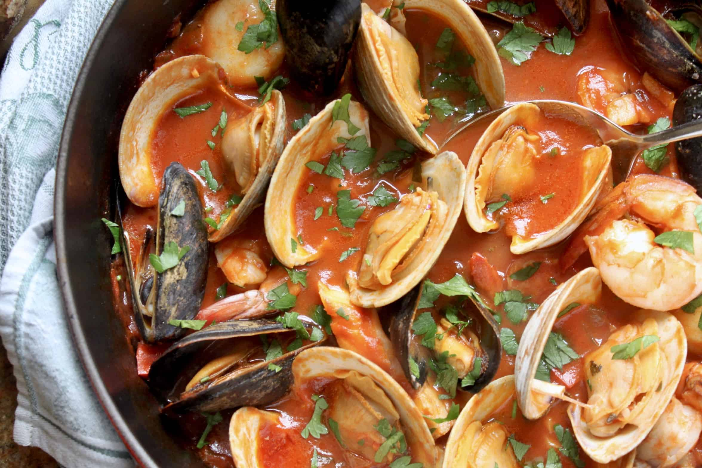

Regional Diversity
Italian cuisine varies significantly from region to region. Each region has its own specialties,
ingredients,
and cooking techniques. Some famous regional cuisines include Tuscan, Sicilian, Venetian, and
Neapolitan.
Appetizers
- Pasta

Ingredients
- Pasta
- Olive oil
- Garlic
- Onion
- Salt
- Pepper
- Herbs and spices
- Parmesan cheese
- Crushed tomatoes or tomato sauce
- Salt to taste
- Optional: Ground meat (beef, pork, or turkey) or vegetables (bell peppers, mushrooms, spinach) for
added
protein and flavor.
Steps
- Cook the pasta according to the package instructions in a pot of salted boiling water until al
dente.
- In a separate pan, heat olive oil over medium heat. Add minced garlic and chopped onions, sauté
until
they become translucent.
- If using ground meat, add it to the pan and cook until browned. Drain excess fat if necessary.
- Pour in crushed tomatoes or tomato sauce, season with salt, pepper, and your choice of herbs and
spices.
Simmer for about 10-15 minutes to allow the flavors to meld.
- Drain the cooked pasta and add it to the sauce. Toss to coat the pasta evenly with the sauce.
- Serve the pasta in bowls, garnished with grated Parmesan cheese and additional herbs, if desired.
- Pizza

Ingredients
- Pizza dough
- Tomato sauce
- Mozzarella cheese
- Pepperoni slices
- Olives
- Mushrooms
- Bell peppers
- Italian herbs (oregano, basil)
- Olive oil
- Salt and pepper to taste
- Optional: Sausage, onions, cherry tomatoes, or other favorite toppings
Steps
- Preheat your oven to the temperature recommended for your pizza dough.
- Roll out the pizza dough on a floured surface to your desired thickness.
- Spread a layer of tomato sauce over the dough, leaving a border for the crust.
- Sprinkle mozzarella cheese over the sauce and add your desired toppings.
- Drizzle with olive oil and sprinkle with Italian herbs, salt, and pepper.
- Bake in the preheated oven until the crust is golden and the cheese is melted and bubbly.
- Remove from the oven, let it cool for a few minutes, slice, and enjoy your homemade pizza!
- Antipasti
Ingredients
- Assorted cured meats (salami, prosciutto, coppa)
- Various cheeses (mozzarella, provolone, gorgonzola)
- Olives (green and black)
- Artichoke hearts
- Roasted red peppers
- Marinated mushrooms
- Grilled zucchini slices
- Crusty Italian bread or breadsticks
- Olive oil for drizzling
- Balsamic vinegar for dipping
Steps
- Arrange the cured meats, cheeses, olives, artichoke hearts, roasted red peppers, and other antipasti
items on a serving platter.
- Place slices of crusty Italian bread or breadsticks alongside the antipasti.
- Drizzle olive oil over the ingredients and serve with a side of balsamic vinegar for dipping.
- Enjoy the variety of flavors and textures in this classic Italian appetizer!
- Italian Seafood

Ingredients
- Assorted seafood (shrimp, mussels, clams, calamari)
- Garlic, minced
- Tomatoes, diced
- White wine
- Fresh basil
- Italian parsley, chopped
- Olive oil
- Salt and pepper to taste
- Crushed red pepper flakes (optional for heat)
- Cooked linguine or spaghetti
Steps
- In a large pan, heat olive oil over medium heat and sauté minced garlic until fragrant.
- Add assorted seafood to the pan and cook until just opaque.
- Pour in white wine, diced tomatoes, and season with salt, pepper, and optional red pepper flakes.
Simmer
until the seafood is fully cooked.
- Toss in cooked linguine or spaghetti, fresh basil, and chopped Italian parsley. Drizzle with
additional
olive oil if desired.
- Serve immediately, and savor the delicious flavors of Italian seafood pasta!
- Espresso and Coffee

Ingredients
- High-quality espresso coffee beans
- Filtered water
- For espresso: Espresso machine
- For coffee: Drip coffee maker or French press
- Optional: Milk, sugar, or flavored syrups
Steps
- Grind the espresso coffee beans to a fine consistency for espresso or a coarser grind for coffee.
- Brew espresso using an espresso machine or prepare coffee using a drip coffee maker or French press.
- For espresso-based drinks, froth milk using the steam wand of the espresso machine.
- Adjust the strength and sweetness of your coffee by adding milk, sugar, or flavored syrups to taste.
- Pour the espresso or coffee into your favorite cup, and savor the rich aroma and flavor of Italian
coffee!
.png)